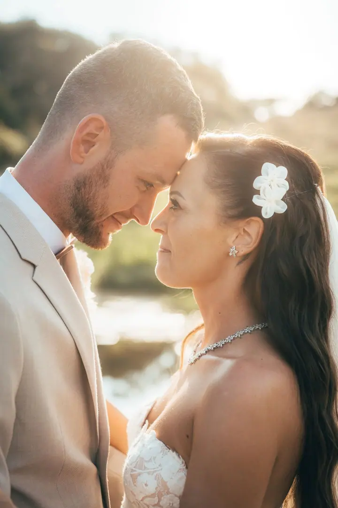
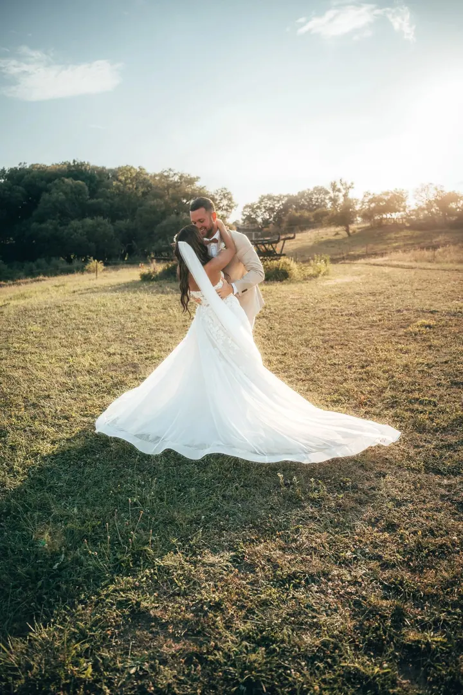
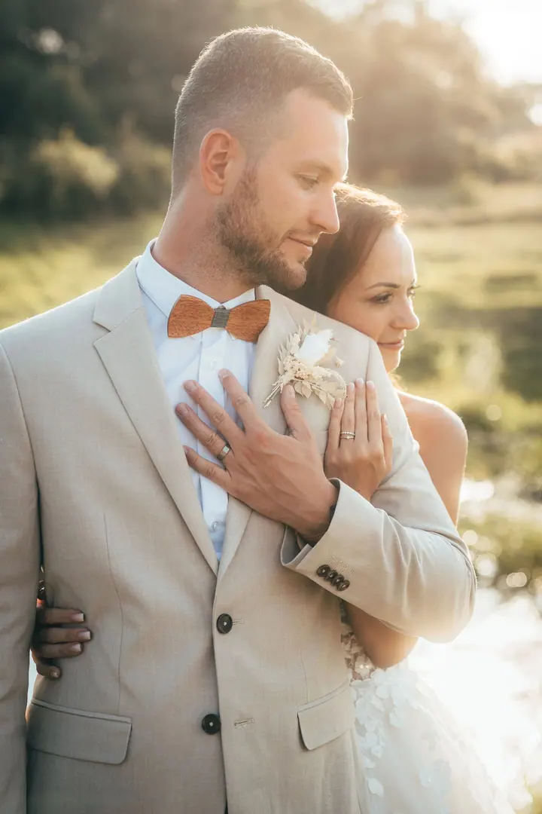
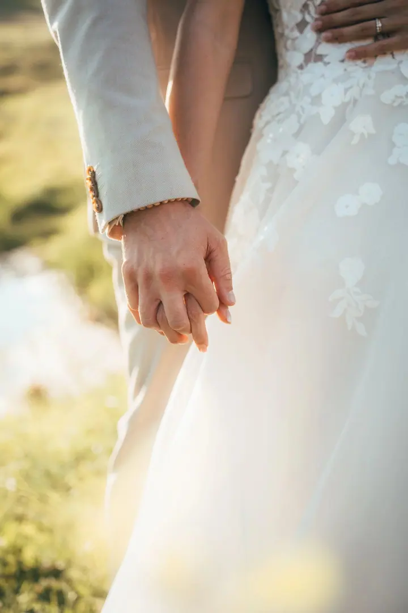
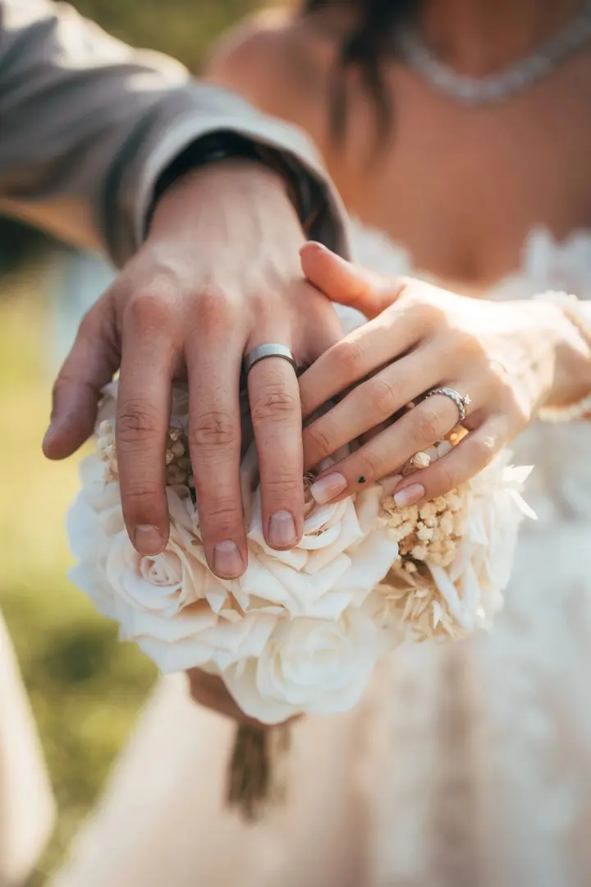
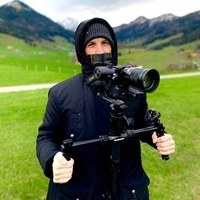

01 / 04
Svatební focení
Fotím svatby v uvolněné a přirozené atmosféře. Jde mi o skutečné emoce a fotky, které budou mít hodnotu i po letech.
Zeptat se na termín→






Váš svatební den v obraze i pohybu
Zeptat se na termín →(01) Ahoj
Jmenuji se Filip Nalevajko a fotím a natáčím svatby , nemovitosti i reklamní videa pro značky . Vystudoval jsem filmovou a televizní tvorbu na SPŠST Panská a v každé zakázce hledám atmosféru, emoce a příběh.
(02) Co dělám
01 / 04
Fotím svatby v uvolněné a přirozené atmosféře. Jde mi o skutečné emoce a fotky, které budou mít hodnotu i po letech.
Zeptat se na termín→02 / 04
Natáčím svatby tak, aby video vystihlo atmosféru celého dne. Vaše přání k finálnímu střihu rád zapracuji.
Zeptat se na termín→03 / 04
Fotím a natáčím nemovitosti pro realitní kanceláře i majitele, včetně leteckých záběrů z dronu. Výstupy dostanete připravené k okamžitému použití.
Zeptat se na termín→Dále nabízím
Pomáhám značkám vyprávět jejich příběh obrazem. Natáčím a fotím akce, produkty i reklamy s důrazem na atmosféru a skutečný dopad.
↗(04) Postup
Od první zprávy po hotovou galerii.
Krok 1 z 4
Napište mi e-mail, zavolejte nebo vyplňte formulář. Zabere vám to jen pár minut.
Krok 2 z 4
Probereme, co od focení nebo videa čekáte, a všechno přizpůsobíme vašim potřebám.
Krok 3 z 4
Pracuji v klidné a přirozené atmosféře a hledám světlo, úhly i chvíle, které dávají smysl. Když se to hodí, přidám záběry z dronu.
Krok 4 z 4
Fotky i video pečlivě upravím a předám vám je ve vysokém rozlišení, připravené k okamžitému použití.
Hledám světlo a úhly, které posunou výsledek dál.
(05) Za objektivem
Jsem fotograf a kameraman. Filmovou a televizní tvorbu jsem vystudoval na SPŠST Panská a dnes se věnuji hlavně svatbám, nemovitostem a reklamním videím. Každý projekt beru individuálně, protože nejde jen o hezký vizuál. Výsledek má mít atmosféru, emoce a skutečný dopad.
Focení i natáčení probíhá v klidu a bez stresu. Pracuji s profesionální technikou, točím i letecké záběry z dronu a na všem pečlivě pracuji i v postprodukci. Fotky a video vám předám ve vysokém rozlišení, připravené k okamžitému použití.
Energii mi dává příroda. Ve slunci, horách, lesích i otevřené krajině nacházím nový pohled, který pak přenáším do své práce. Pro dobrý záběr jdu klidně o krok dál a hledám úhly, světlo i chvíle, kterými se výsledek odliší od běžné produkce.

Filip
Filip Nalevajko · Svatební a realitní fotograf a kameraman
Ano, jsem fotograf i kameraman. Domluvíme se, jestli chcete fotky, video, nebo obojí, a podle toho naplánujeme celý den.
Focení nemovitosti začíná na 1 500 Kč, svatební video na 5 000 Kč. Přesnou cenu vám pošlu, až budu vědět, co potřebujete.
Ano, letecké záběry z dronu natáčím u nemovitostí, svateb i reklamních videí, pokud to místo a podmínky dovolí.
Určitě. Vaše přání probereme dopředu a i úpravy hotového videa spolu rádi doladíme.